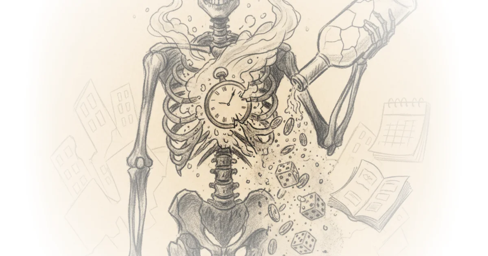

Scott Alexander doesn't just retell a philosophical thought experiment; he weaponizes it against the reader's own moral intuitions by swapping abstract theory for gritty, drug-fueled reality. The most startling claim here isn't about justice, but about the terrifying efficiency of a charity that refuses to help anyone who wouldn't help them in return. By grounding John Rawls' "Veil of Ignorance" in a Baltimore where the poor are screened by hallucinogens, Alexander forces us to confront whether our kindness is genuine or merely a calculation of self-interest.
The Alcoholic's Rejection
The narrative begins not with a philosopher, but with a broken man named John Rawls the Alcoholic, a figure whose life trajectory mirrors the grim reality of Prohibition-era Baltimore before the laws even changed. He is a man who "expected to drink himself to death by age 60," surviving on a cycle of petty crime and the dwindling charity of a city that has moved on. When he finally encounters the John Rawls Foundation, he is met not with pity, but with a clinical interrogation disguised as aid.

Scott Alexander writes, "The screening process would involve being administered a certain experimental drug and led through a hypnotic induction." This is the story's first masterstroke: replacing the hypothetical "original position" with a literal chemical induction. The foundation doesn't ask what you would do if you were poor; they make you be poor in a dream to see if you would still act with generosity. As Alexander puts it, "When poor people ask us for money, we induce the trance and make them think we are poor, they are rich, and they're being asked to donate to us."
The brilliance of this framing is that it bypasses the usual excuses of the destitute. The Alcoholic admits to the priest, "If I get rich, you think I would share it with those millionaire dipshits in Guilford and Roland Park? Hell no!" He acknowledges the drug's accuracy, noting that "his mind-reading drug got my number." This is a devastating critique of transactional morality. If your charity is conditional on the recipient's future reciprocity, then the Alcoholic is correctly denied aid.
"The Church is not a country club for saints, but a hospital for sinners."
Critics might argue that this system punishes the very people society has failed to protect, creating a cruel feedback loop where the ungenerous are starved into further ungenerosity. Alexander anticipates this by having the priest suggest "fake it 'til you make it," but the Alcoholic's refusal to "spend the few shitty years I have left training myself to be some rich person's bitch" highlights the impossibility of such a transformation for someone in his position.
The Banker's Blind Spot
The story then pivots to John Rawls the Banker, a man of "good Protestant values" who believes he "lifted himself by his own bootstraps." He represents the classic meritocratic worldview: success is earned, and failure is a moral failing. He is approached by a "Visionary" who proposes a radical new theory of charity based on counterfactual reciprocity.
The Visionary argues, "My theory of charity is that we should only give to those poor people who, in the counterfactual where they were rich and we were poor, would give to us." This is a direct, literal application of Rawls' social contract theory, but stripped of its philosophical safety net. The Banker recoils, insisting, "It's not a betrayal... unless they actually helped me. Which they haven't." He clings to the idea that moral obligation requires a historical transaction, not a hypothetical one.
Scott Alexander writes, "We judge the moral character of a would-be-murderer whose gun jams at the last moment the same as a successful murderer." This analogy is the crux of the argument: character is defined by intent and disposition, not by the luck of circumstance. The Visionary pushes back, asking, "Isn't that something of a betrayal? Nobody wants to be a moocher, but I see no other way to interpret your view that even though these people have each agreed to help you, you would do nothing for them."
The Banker's refusal to accept this logic reveals a deep cognitive dissonance. He is willing to accept the philosophical premise that character matters more than luck, yet he refuses to act on it. As Alexander notes, "The implications are absurd... One would owe favors to half the world." The Banker's defense is essentially that he doesn't want to live in a world where he owes everyone, even if he admits he would be helped by them in a different life.
The Trap of the Veil
The climax of the piece arrives when the Visionary reveals the true nature of the test. The Banker, thinking he is the evaluator, is actually the subject. The Visionary explains, "The dose I put in your wine ought to be taking effect around now." The Banker is about to undergo the same test he refused to fund for the poor.
This twist reframes the entire narrative. The Banker's skepticism about the "untested psychedelic" mirrors the Alcoholic's skepticism about the foundation's methods. Alexander writes, "I think you should take my drug... and live the life of a poor person. Maybe you would lift yourself up with your own bootstraps, maybe you wouldn't." The irony is palpable: the man who refused to help the poor because they wouldn't help him is about to be judged by the same metric he rejected.
The story leaves the reader in a state of suspense, but the philosophical point is clear. The "Veil of Ignorance" is not a thought experiment to be debated over wine; it is a test of character that everyone must eventually face. As Alexander puts it, "It is foolish to credit someone for the luck of actually being your actual benefactor, rather than for merely having the sort of character that ensures they would be."
Critics might note that this approach reduces complex social issues to a binary test of individual morality, ignoring systemic barriers that prevent people from being "generous" even if they wanted to be. However, the story's power lies in its refusal to offer an easy answer. It forces the reader to ask: if you were the Alcoholic, would you pass? If you were the Banker, would you admit you failed?
"The equilibrium is not so bad. One might even say it would be Heaven on Earth."
Bottom Line
Scott Alexander's "Being John Rawls" is a masterclass in using speculative fiction to dissect moral philosophy, turning a dry academic concept into a visceral, high-stakes drama. Its greatest strength is the way it exposes the hypocrisy of conditional charity, forcing the reader to confront the uncomfortable truth that our generosity is often just a calculation of self-interest. The piece's vulnerability lies in its reliance on a magical solution to a human problem, but that is precisely the point: the test is impossible to pass without a fundamental change in character, a change that the world rarely allows.